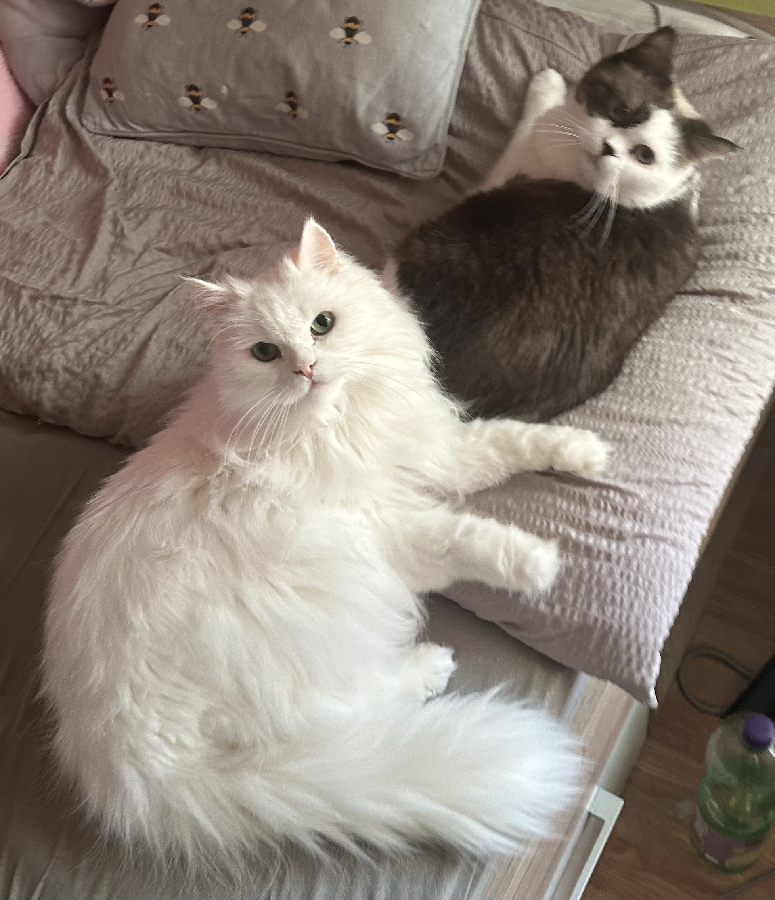
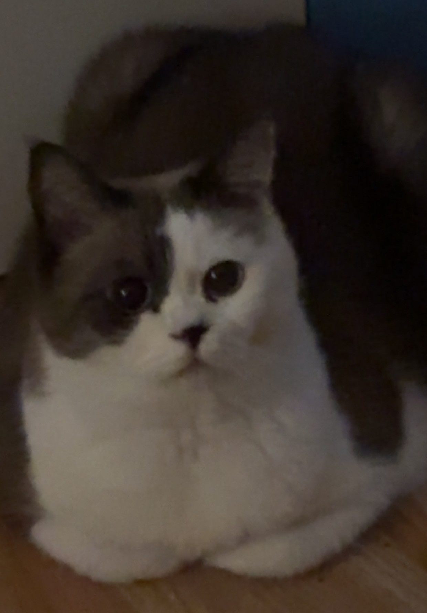
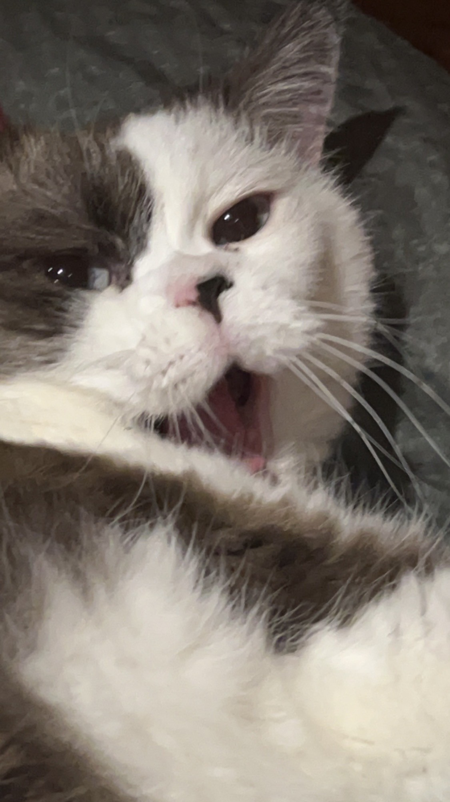
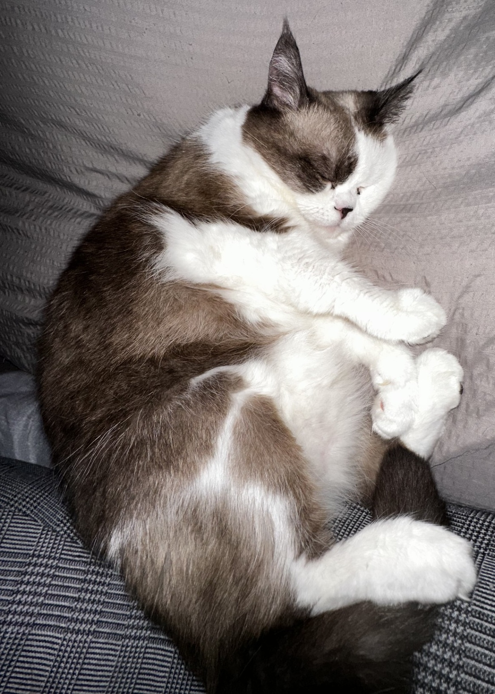
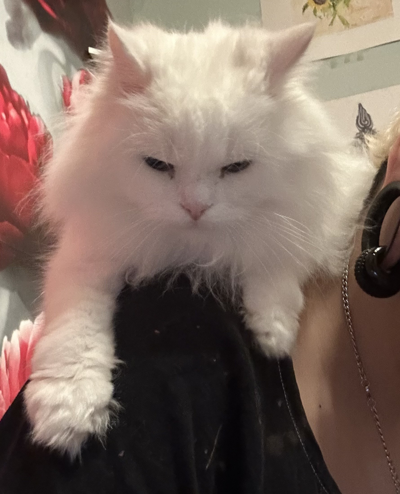
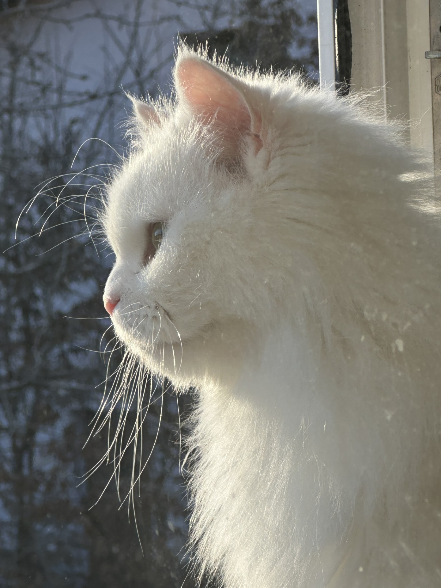
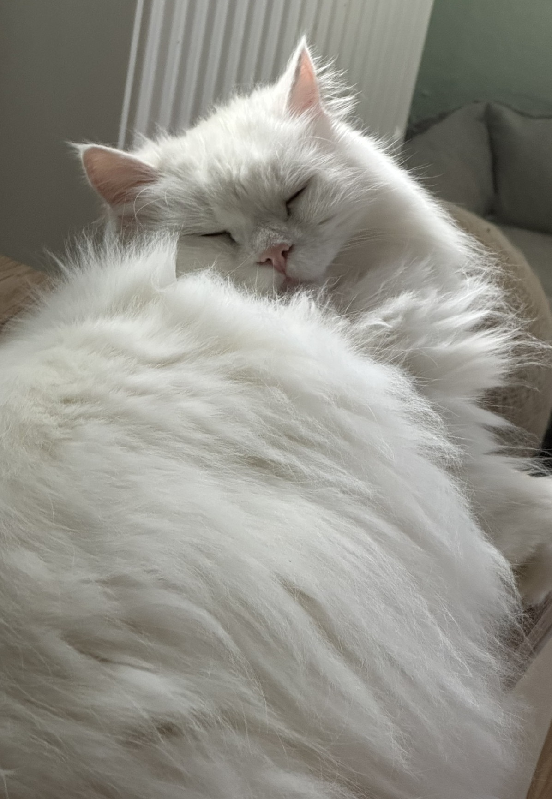

Mein Name ist Laila Karam, mein Spitzname ist Lila & ich bin 1999 geboren. Ich habe für 2 Jahre in Wien gewohnt & bin leider mittlerweile nach Niederösterreich gezogen. Da dort die Miete billiger ist & ich mehr m2 an Wohnfläche habe, das lustige ist, die Zeit, die ich zur Schule brauche ist genau gleich.
Ich habe vor der HTL 2 Jahre als Labortechnikerin in einem österreichisch akkreditierten Schmieröl-Labor in Wien gearbeitet.
Davor eine Lehre in der Qualitätskontrolle bei einem Labor welches Betonzusatzmittel herstellt als Labortechnikerin mit Schwerpunkt Chemie mittels LAP erfolgreich absolviert.
Ich bin auch Vocalist in einer Crossover-Thrash-Metal-Band, was mir sehr viel Spaß macht & mir mit meinen Ängsten geholfen hat. Wir haben dieses Jahr auch ein Benefizkonzert in Zusammenarbeit mit dem Kinderfreundeheim Schlöglmühl veranstaltet & 1.000€ an Spenden gesammelt.
Hier ein Link zu unserem neuesten Musikvideo: ZERNICHTER-Fight (Official Music Video)
Ich habe 2 Katzen, Oscar & Coco die ich über alles LIEBE Oscar ist ein weißer Langhaar Kater mit grünen Augen. Coco ist eine braun/weiß gemischte Katze mit 2 farbiger Nase, hellblauen Augen & mittel-langen Fell. Die 2 sind Geschwister & Perser-Mischlinge. Sie lieben es zu kuscheln & sind sehr anhänglich, sie schlafen immer mit/neben mir im Bett.
Hier ein paar Fotos meiner Babys:







Ich bin sehr tierlieb & habe natürlich auch Lieblingstiere, unten angeführt eine geordnete Liste dieser.
Hier noch eine Tabelle meiner Lieblingsfarben:
| Farben |
|---|
| Schwarz |
| Weiß | Lila |
| Grün |